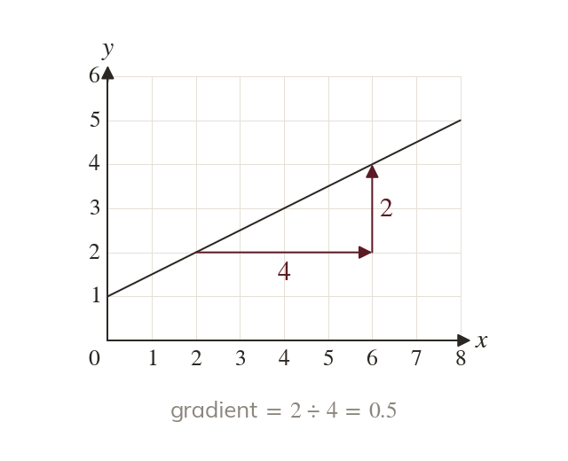
Steepness as a number
The gradient is the vertical change divided by the horizontal change. On a straight line it is the same wherever it is measured.
Gradient turns "steep" into a number. It says how fast one quantity changes as another increases, on a hill sign or on a phone bill.
Work down the page at your own pace. Write every answer in your book first, then click to check it.
Read each card, then follow the worked examples one step at a time.

The gradient is the vertical change divided by the horizontal change. On a straight line it is the same wherever it is measured.
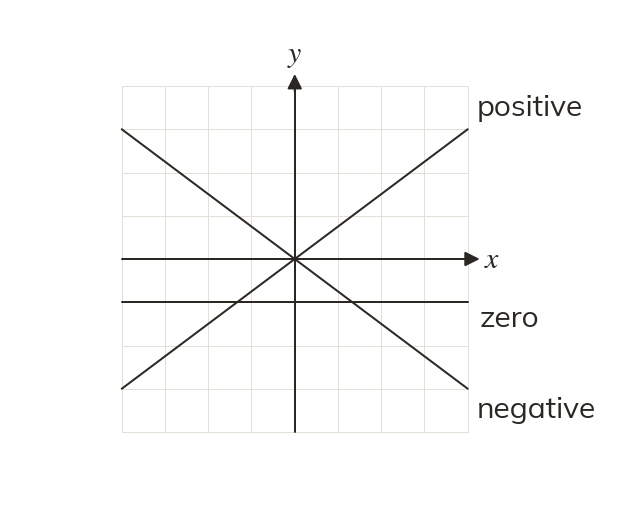
A line rising left to right has a positive gradient. A falling line has a negative gradient. The steeper the line, the larger the gradient's size.
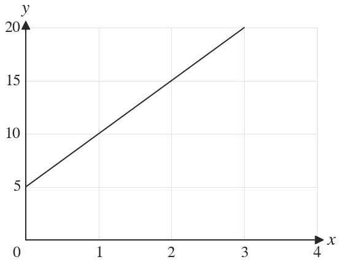
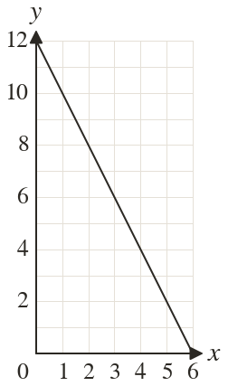
Pick an answer. If it's wrong, the feedback tells you which mistake it was.
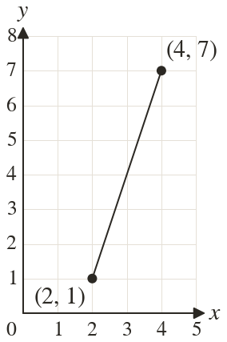
Printable worksheet — the questions with room to work.
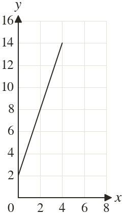
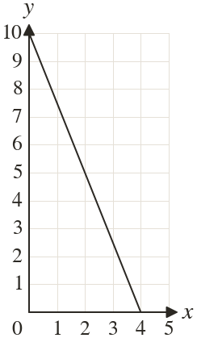
Read each card, then follow the worked examples one step at a time.
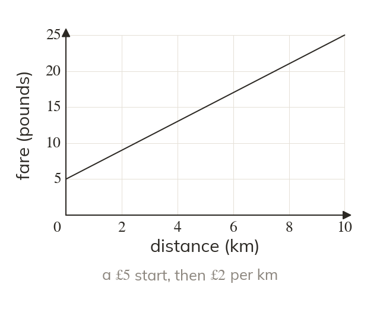
In context, the gradient is the change up for each one unit across. Its units are vertical unit per horizontal unit.
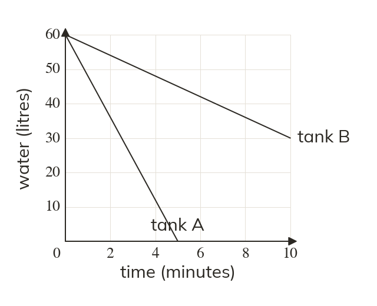
A positive gradient means the quantity is increasing. A negative one means it is decreasing. The larger the size, the faster the change.
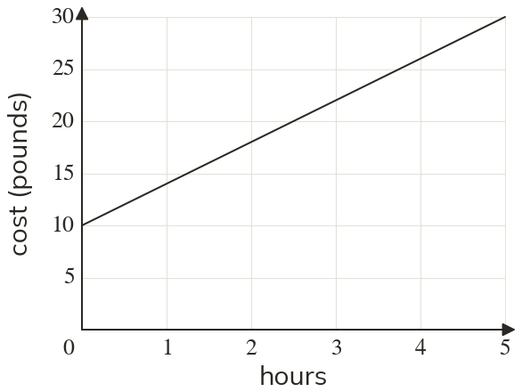
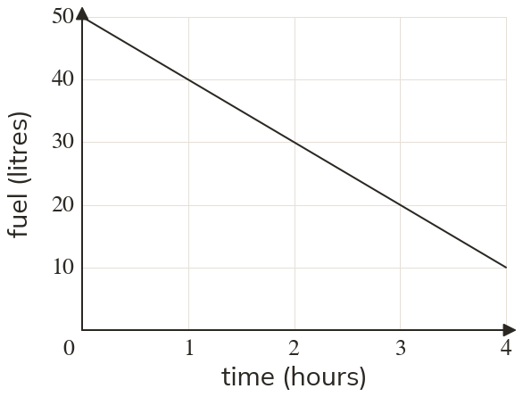
Pick an answer. If it's wrong, the feedback tells you which mistake it was.
Finished? Next lesson: 8.13.3 Speed from Gradients.
For each skill, tap the one that is true for you today. Your Revise pages start with anything you mark Not yet.
Your ratings are saved on this device only.
Log in, then search for a code to practise that skill.
Videos, worksheets and more on each part of this lesson.